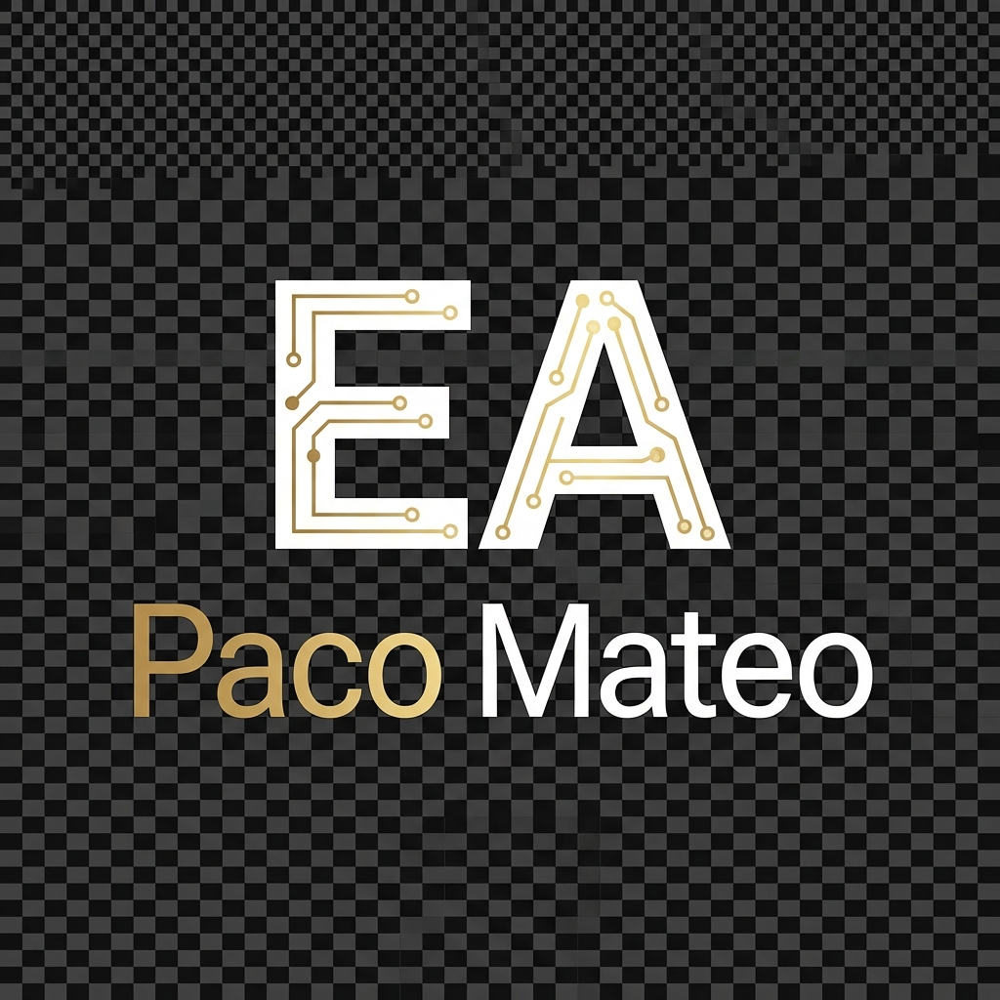

Herramientas simples para un experto en electrónica
Tú dominas los circuitos y los voltios, así que deja que este programa se encargue de "los trastos" de Windows por ti.
Es un asitente automático: tú haces doble clic y él saca los archivos de cualquier caja (.zip) que te manden por email.
Busca en tu carpeta de Descargas el último archivo que has bajado y lo prepara todo en una carpeta nueva.
Al ser un programa creado a medida, Windows puede preguntar si es seguro.
Solo tienes que pulsar "Más información" y luego "Ejecutar de todas formas". Es 100% seguro y no necesita internet.
✅ Sin instalar nada: Es un archivo pequeño que hace el trabajo.
✅ Orden automático: Crea carpetas limpias para no mezclar archivos.
✅ Ahorro de tiempo: Ideal para esquemas y manuales de componentes.
Guárdalo en tu Escritorio para tenerlo siempre a mano